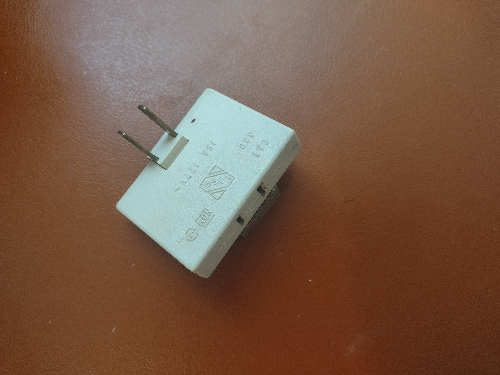

Algunos de nuestros productos son..
| Nombre | Herramienta | Descripción |
|---|---|---|
| Martillo |
|
Mango y cabeza de metal, perfecto para trabajos pesados |
| Contacto de Pared Duplex 2 Polos + Tierra |
|
Aterrizado, este tomacorriente se caracteriza por tener tres puntos de conexión, línea, neutro y de tierra física |
| Pinza de corte diagonal | Pinzas de corte diagonal de 4 pulgadas, útiles para trabajar con alambre y cables durante labores de mantenimiento en instalaciones eléctricas. | |
| Cinta de teflón | Mejora la colocación de conexiones en las instalaciones de gas, adhiriendose a las píezas para mejorar su ajuste | |
| Cutter de uso rudo | Cutter plastico y estructura de metal con navajas de 19 mm | |
| Destornillador | estornillador plano de 26 x 2.6 x 2.6 cm con punta de 3/16, cuenta con mango ergonómico plastico | |
| Multicontacto |  | Ajustable y cuenta con 3 tomacorrientes |
| Regulador de 1 via | Ayuda a regular la presión de gas LP con componentes internos de latón | |
| Cinta metrica | De uso rudo, 5 metros con presición milimétrica | |
| Llave inglesa | Precisión milimétrica |
¿Desea recibir mayores informes? proporcione su nombre y correo, un asesor se comunicara con usted